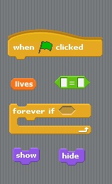

Teaching Point:
Today we will learn how to make our Game end.
Game Over
So far our game never ends, because there is no way for the player to lose. We should change that. Once the Sprite has 0 Lives we should show a new Sprite that says GAME OVER. The GAME OVER Sprite would actually be there the whole time. It would just be hidden when the game starts, and only show when the Sprite runs out of lives. Using the codes in the picture below we can make this happen. In what way do we need to put those codes together?
Today's Assignment
Make a Game Over Sprite that hides when the Game Starts and ends when the Sprite has 0 lives.
Extension Activity
Make another button that changes a setting or special effect in your game.
Back to School Portal